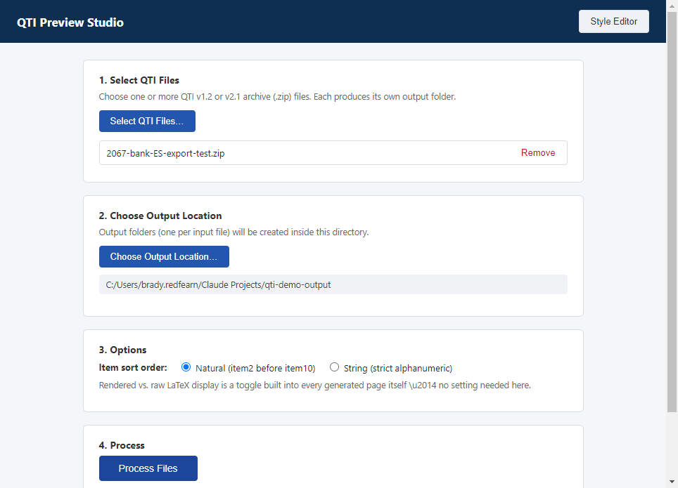
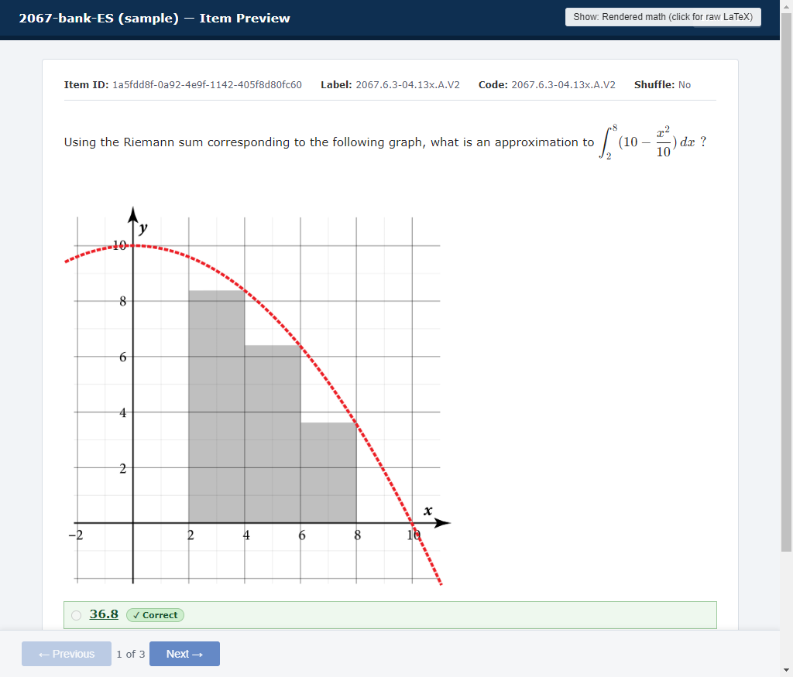
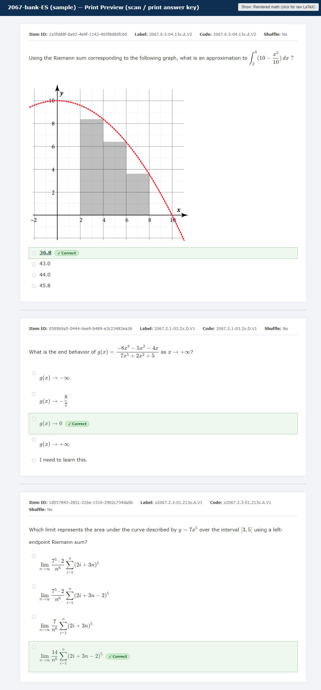

Which one should I pick? Use the portable version to try it out or run it occasionally: it is just one file, nothing gets installed, and you delete it when you are done. Pick the installer if you want the app to stay on the computer with a Start-menu shortcut, like a normal program. Both work exactly the same once open.
A warning on first launch is normal and safe to allow. Because this app isn't signed with a paid certificate, Windows shows a blue "Windows protected your PC" screen the first time. Click More info, then Run anyway. You only do this once per computer.
What you get

The app itself: pick your files, pick where the results go, click Process.

Item Preview: one item at a time, like taking the test. Correct answers carry a green ✓ Correct badge.

Print Preview: every item on one scrollable page, good for scanning or printing an answer key.
How to use it
Click Select QTI Files… and choose one or more .zip archives. Each one becomes its own output folder.
Click Choose Output Location… and pick the folder where the results should go.
Under Options, pick how items are sorted: Natural (so item2 comes before item10) or String (strict character-by-character).
Click Process Files. When it finishes, each bank shows four buttons.
Button
What it does
Item Preview
Opens the one-item-at-a-time view in your web browser.
Print Preview
Opens the all-items-on-one-page view in your web browser.
Log
Opens a plain-text summary of what was converted.
Reveal Folder
Opens the results folder on your computer.
In either preview, the button in the top-right corner switches between properly displayed math and the raw math markup. Need more detail? See the full guide.
Good to know
Supported item types: multiple choice, multiple response, fill-in-the-blank, and dropdown. Any other type still shows its basic details plus a "not supported yet" note (check the Log).
Running the same bank again replaces its previous results folder.
The app works entirely offline and never sends your data anywhere. Verified